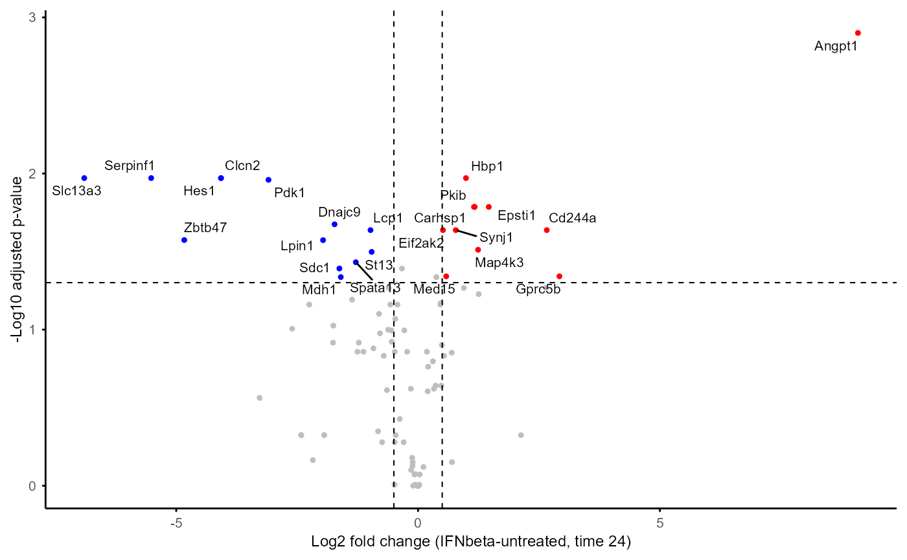

This function creates a volcano plot to visualize
the results of differential expression (DE) analysis performed by
DE_between_group() or DE_between_time(). The plot displays
log2 fold change on the x-axis and -log10 adjusted p-value on the
y-axis, with DE features highlighted based on specified thresholds.
If no thresholds are provided, the function will use the thresholds that
were applied when running DE_between_group() or DE_between_time().
Usage
plot_volcano(
DE_out,
group1,
group2,
time,
group,
time1,
time2,
logFC_thres = NULL,
adjP_thres = NULL,
label = FALSE,
fontsize = 8,
...
)Arguments
- DE_out
Output from
DE_between_group()orDE_between_time()- group1
(Required for
DE_between_group()output) Name of the first group for comparison- group2
(Required for
DE_between_group()output) Name of the second group for comparison- time
(Required for
DE_between_group()output) Time point for comparison- group
(Required for
DE_between_time()output) Name of the group for comparison- time1
(Required for
DE_between_time()output) First time point for comparison- time2
(Required for
DE_between_time()output) Second time point for comparison- logFC_thres
(Optional) Log2 fold change threshold for highlighting DE features, default is NULL (using threshold when
DE_between_group()orDE_between_time()was run)- adjP_thres
(Optional) Adjusted p-value threshold for highlighting DE features, default is NULL (using threshold when
DE_between_group()orDE_between_time()was run)- label
(Optional) Whether to label names of DE features on the plot (default is FALSE)
- fontsize
(Optional) Font size for the plot (default is 8)
- ...
Additional arguments for ggrepel::geom_text_repel() when label = TRUE
Examples
data(example_obj)
example_obj <- normalise_to_start(example_obj)
#> Normalising to group baseline at each feature's first non-NA time point.
DE_between_group_out <- DE_between_group(example_obj, assay = 2)
#> Non-NA replicate number filter not specified. Using minimum number of replicates across all groups and time points: 0
#> Comparing group IFNgamma to IFNbeta at Time 0: keeping 100 of 100 features (100.0%)
#> Warning: Zero sample variances detected, have been offset away from zero
#> Comparing group IFNgamma to IFNbeta at Time 2: keeping 100 of 100 features (100.0%)
#> Warning: Zero sample variances detected, have been offset away from zero
#> Comparing group IFNgamma to IFNbeta at Time 4: keeping 100 of 100 features (100.0%)
#> Warning: Zero sample variances detected, have been offset away from zero
#> Comparing group IFNgamma to IFNbeta at Time 6: keeping 100 of 100 features (100.0%)
#> Warning: Zero sample variances detected, have been offset away from zero
#> Comparing group IFNgamma to IFNbeta at Time 8: keeping 100 of 100 features (100.0%)
#> Warning: Zero sample variances detected, have been offset away from zero
#> Comparing group IFNgamma to IFNbeta at Time 24: keeping 100 of 100 features (100.0%)
#> Warning: Zero sample variances detected, have been offset away from zero
#> Comparing group LPS to IFNbeta at Time 0: keeping 100 of 100 features (100.0%)
#> Warning: Zero sample variances detected, have been offset away from zero
#> Comparing group LPS to IFNbeta at Time 2: keeping 100 of 100 features (100.0%)
#> Warning: Zero sample variances detected, have been offset away from zero
#> Comparing group LPS to IFNbeta at Time 4: keeping 100 of 100 features (100.0%)
#> Warning: Zero sample variances detected, have been offset away from zero
#> Comparing group LPS to IFNbeta at Time 6: keeping 100 of 100 features (100.0%)
#> Warning: Zero sample variances detected, have been offset away from zero
#> Comparing group LPS to IFNbeta at Time 8: keeping 100 of 100 features (100.0%)
#> Warning: Zero sample variances detected, have been offset away from zero
#> Comparing group LPS to IFNbeta at Time 24: keeping 100 of 100 features (100.0%)
#> Warning: Zero sample variances detected, have been offset away from zero
#> Comparing untreated vs IFNbeta: time points only in IFNbeta: 2, 4, 6; only in untreated: none
#> Comparing group untreated to IFNbeta at Time 0: keeping 100 of 100 features (100.0%)
#> Warning: Zero sample variances detected, have been offset away from zero
#> Comparing group untreated to IFNbeta at Time 8: keeping 100 of 100 features (100.0%)
#> Warning: Zero sample variances detected, have been offset away from zero
#> Comparing group untreated to IFNbeta at Time 24: keeping 100 of 100 features (100.0%)
#> Warning: Zero sample variances detected, have been offset away from zero
#> Comparing group IFNbeta to IFNgamma at Time 0: keeping 100 of 100 features (100.0%)
#> Warning: Zero sample variances detected, have been offset away from zero
#> Comparing group IFNbeta to IFNgamma at Time 2: keeping 100 of 100 features (100.0%)
#> Warning: Zero sample variances detected, have been offset away from zero
#> Comparing group IFNbeta to IFNgamma at Time 4: keeping 100 of 100 features (100.0%)
#> Warning: Zero sample variances detected, have been offset away from zero
#> Comparing group IFNbeta to IFNgamma at Time 6: keeping 100 of 100 features (100.0%)
#> Warning: Zero sample variances detected, have been offset away from zero
#> Comparing group IFNbeta to IFNgamma at Time 8: keeping 100 of 100 features (100.0%)
#> Warning: Zero sample variances detected, have been offset away from zero
#> Comparing group IFNbeta to IFNgamma at Time 24: keeping 100 of 100 features (100.0%)
#> Warning: Zero sample variances detected, have been offset away from zero
#> Comparing group LPS to IFNgamma at Time 0: keeping 100 of 100 features (100.0%)
#> Warning: Zero sample variances detected, have been offset away from zero
#> Comparing group LPS to IFNgamma at Time 2: keeping 100 of 100 features (100.0%)
#> Warning: Zero sample variances detected, have been offset away from zero
#> Comparing group LPS to IFNgamma at Time 4: keeping 100 of 100 features (100.0%)
#> Warning: Zero sample variances detected, have been offset away from zero
#> Comparing group LPS to IFNgamma at Time 6: keeping 100 of 100 features (100.0%)
#> Warning: Zero sample variances detected, have been offset away from zero
#> Comparing group LPS to IFNgamma at Time 8: keeping 100 of 100 features (100.0%)
#> Warning: Zero sample variances detected, have been offset away from zero
#> Comparing group LPS to IFNgamma at Time 24: keeping 100 of 100 features (100.0%)
#> Warning: Zero sample variances detected, have been offset away from zero
#> Comparing untreated vs IFNgamma: time points only in IFNgamma: 2, 4, 6; only in untreated: none
#> Comparing group untreated to IFNgamma at Time 0: keeping 100 of 100 features (100.0%)
#> Warning: Zero sample variances detected, have been offset away from zero
#> Comparing group untreated to IFNgamma at Time 8: keeping 100 of 100 features (100.0%)
#> Warning: Zero sample variances detected, have been offset away from zero
#> Comparing group untreated to IFNgamma at Time 24: keeping 100 of 100 features (100.0%)
#> Warning: Zero sample variances detected, have been offset away from zero
#> Comparing group IFNbeta to LPS at Time 0: keeping 100 of 100 features (100.0%)
#> Warning: Zero sample variances detected, have been offset away from zero
#> Comparing group IFNbeta to LPS at Time 2: keeping 100 of 100 features (100.0%)
#> Warning: Zero sample variances detected, have been offset away from zero
#> Comparing group IFNbeta to LPS at Time 4: keeping 100 of 100 features (100.0%)
#> Warning: Zero sample variances detected, have been offset away from zero
#> Comparing group IFNbeta to LPS at Time 6: keeping 100 of 100 features (100.0%)
#> Warning: Zero sample variances detected, have been offset away from zero
#> Comparing group IFNbeta to LPS at Time 8: keeping 100 of 100 features (100.0%)
#> Warning: Zero sample variances detected, have been offset away from zero
#> Comparing group IFNbeta to LPS at Time 24: keeping 100 of 100 features (100.0%)
#> Warning: Zero sample variances detected, have been offset away from zero
#> Comparing group IFNgamma to LPS at Time 0: keeping 100 of 100 features (100.0%)
#> Warning: Zero sample variances detected, have been offset away from zero
#> Comparing group IFNgamma to LPS at Time 2: keeping 100 of 100 features (100.0%)
#> Warning: Zero sample variances detected, have been offset away from zero
#> Comparing group IFNgamma to LPS at Time 4: keeping 100 of 100 features (100.0%)
#> Warning: Zero sample variances detected, have been offset away from zero
#> Comparing group IFNgamma to LPS at Time 6: keeping 100 of 100 features (100.0%)
#> Warning: Zero sample variances detected, have been offset away from zero
#> Comparing group IFNgamma to LPS at Time 8: keeping 100 of 100 features (100.0%)
#> Warning: Zero sample variances detected, have been offset away from zero
#> Comparing group IFNgamma to LPS at Time 24: keeping 100 of 100 features (100.0%)
#> Warning: Zero sample variances detected, have been offset away from zero
#> Comparing untreated vs LPS: time points only in LPS: 2, 4, 6; only in untreated: none
#> Comparing group untreated to LPS at Time 0: keeping 100 of 100 features (100.0%)
#> Warning: Zero sample variances detected, have been offset away from zero
#> Comparing group untreated to LPS at Time 8: keeping 100 of 100 features (100.0%)
#> Warning: Zero sample variances detected, have been offset away from zero
#> Comparing group untreated to LPS at Time 24: keeping 100 of 100 features (100.0%)
#> Warning: Zero sample variances detected, have been offset away from zero
#> Comparing IFNbeta vs untreated: time points only in untreated: none; only in IFNbeta: 2, 4, 6
#> Comparing group IFNbeta to untreated at Time 0: keeping 100 of 100 features (100.0%)
#> Warning: Zero sample variances detected, have been offset away from zero
#> Comparing group IFNbeta to untreated at Time 8: keeping 100 of 100 features (100.0%)
#> Warning: Zero sample variances detected, have been offset away from zero
#> Comparing group IFNbeta to untreated at Time 24: keeping 100 of 100 features (100.0%)
#> Warning: Zero sample variances detected, have been offset away from zero
#> Comparing IFNgamma vs untreated: time points only in untreated: none; only in IFNgamma: 2, 4, 6
#> Comparing group IFNgamma to untreated at Time 0: keeping 100 of 100 features (100.0%)
#> Warning: Zero sample variances detected, have been offset away from zero
#> Comparing group IFNgamma to untreated at Time 8: keeping 100 of 100 features (100.0%)
#> Warning: Zero sample variances detected, have been offset away from zero
#> Comparing group IFNgamma to untreated at Time 24: keeping 100 of 100 features (100.0%)
#> Warning: Zero sample variances detected, have been offset away from zero
#> Comparing LPS vs untreated: time points only in untreated: none; only in LPS: 2, 4, 6
#> Comparing group LPS to untreated at Time 0: keeping 100 of 100 features (100.0%)
#> Warning: Zero sample variances detected, have been offset away from zero
#> Comparing group LPS to untreated at Time 8: keeping 100 of 100 features (100.0%)
#> Warning: Zero sample variances detected, have been offset away from zero
#> Comparing group LPS to untreated at Time 24: keeping 100 of 100 features (100.0%)
#> Warning: Zero sample variances detected, have been offset away from zero
plot_volcano(DE_between_group_out, group1 = "untreated",
group2 = "IFNbeta", time = 24,
logFC_thres = 0.5, adjP_thres = 0.05, label = TRUE)
